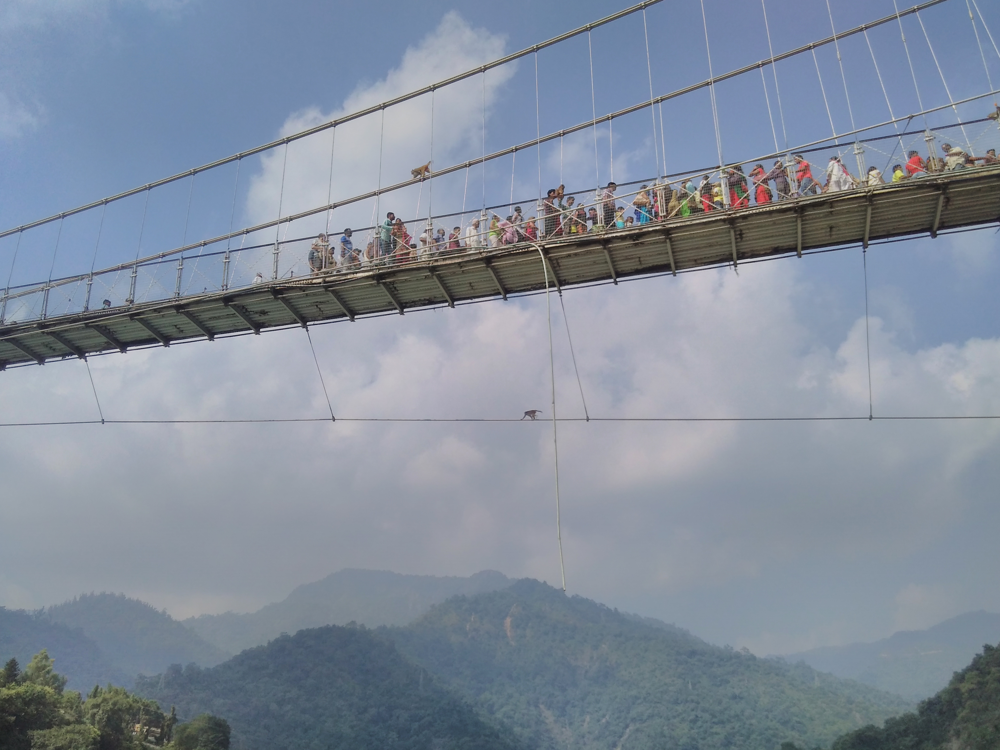
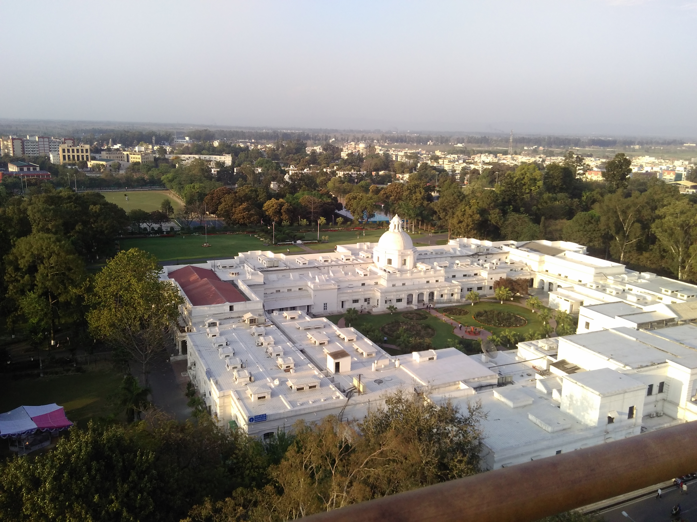

"Quality Education is our motto"Einstein Public SchoolSouth of SankatMochan Temple,Janakpurdham-09,Nepal
first pic
Overview
Einstein Public School(often reffered as EPS) was established in 2062 B.S.(2005 A.D.) with aim to nurture the young minds to bring the best out of them.We stand for academic accomplishment and provide an environment that fosters academic achievement.Student requirement and academic support go hand in hand. The School has a state-of-the-art teaching team.This educational establishment is managed by a devoted team of professionals advised by outstanding advisors.We challenge, empower, and prepare all for success.We serve all stakeholders by building the intellect and ethics of our students so they may be productive members of society.We Support student thinking and help them to communicate with clarity & precision in order to instill an intrinsic desire for life-long learning.We strive to provide EDUCATION FOR THE FUTURE in order to fulfill the aspirations of our students through qualitative education.
News and Announcement
First Term Exam 2073B.S.(2016)
Salient Features


Our team
We have an outstanding teaching team composed up of the best teachers in Janakpur with ample teaching experience.
Adminstration
Mrs. Prem Lata Kumari
Mr. Laxmeshwar Yadav
Mr. Arvind Yadav
Maths
Mr. Bishnudev Yadav
Mr. Raj Kumar Mahaseth
Mr. Dinesh Pandey
Mr. Ghuran Yadav
Science
Mr. B.C. Shukla
Mr. Bikram Mandal
Mr. Bijendra Patel
Mr. Shiv Chandra Das
English
Mr. Bikram Yadav
Mr. Kali Charan Chaudary
Mr. Jagarnath Thakur
Mr. Saroj Yadav
Nepali
Mr. Shivnandan Yadav
Mr. Surya Narayan Mandal
Mr. Durgesh Mukhiya
Social Studies
Mr. Kali Charan Chaudary
Mr. Ram Sagar Pal
Computer Science
Mr. Manoj Bharti
Mr. Abhinash Jha
Environment,Population&Health
Mr. Jagarnath Thakur
Mr. Manoj Bharti
Mr. Abhinash Jha
Admissions
We have limited number of seats for each class and admit new students in classes from Nursery to 9.The new admissions are done in the first week of Baishakh(3rd week of May) after an entrance test.You can contact us during the office hours for further queries about admissions.
Upon the successful application of the students, the following documents need to be submitted in the office for admission:
The Application form including the signature of the Guardian
The Original Transfer Certificate from the school last attended
Two copies of passport size photographs
Passport size photograph of each parent and/or guardian
The Photocopy of mark-sheet of the student from the previous school
Additional certificates(if any) that notify the student's additional expertise
Directions:
The school building is the first one to the south of the Sankatmochan Temple which lies near the north-west corner of the Barabigha ground.
Site developed by Satyam Yadav,B.Tech ECE(2nd Year),IIT Roorkee E-mail:satyamyadav5141@gmail.com